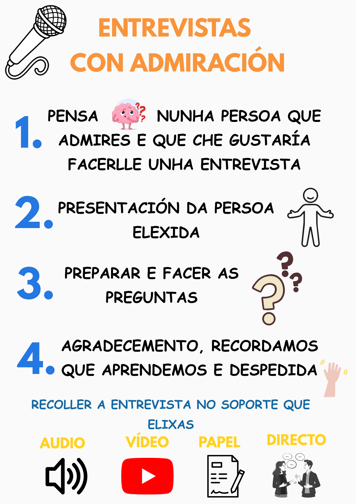

Con ollos de admiración
Con Ollos de Admiración é o nome do Proxecto Documental Integrado no que este curso se atopa inmerso o centro educativo.
A súa finalidade é facer visibles e valorar os talentos e as vivencias presentes na nosa comunidade educativa e tamén fóra dela, creando espazos onde o alumnado poida ensinar as súas fortalezas e aprender das demáis persoas.
É unha invitación a mirar con ollos de admiración, recoñecendo que cada persoa ten algo valioso que achegar e que a diversidade de capacidades é a que impulsa o aprendizaxe compartido.
O MURO DA ADMIRACIÓN

O muro da admiración é un espazo situado na biblioteca do centro que funcionará como un pequeno noticieiro da comunidade educativa.
Neste taboleiro poderán compartirse diferentes novas relacionadas co talento e as experiencias das persoas do centro: traballos realizados polo alumnado, proxectos persoais, logros acadados, iniciativas destacadas ou mesmo figuras relevantes que se queiran dar a coñecer. Calquera membro da comunidade pode participar, dando a coñecer o talento que nos rodea.
ENTREVISTAS CON ADMIRACIÓN

Esta actividade, enmarcada no programa Biblioteca Creativa, busca fomentar a expresión oral, a escoita activa e a valoración das persoas que nos rodean. Ao longo do curso, o alumnado preparará e presentará entrevistas no seu grupo aula, ata que todo o alumnado teña compartido a súa.
Cada entrevista seguirá un pequeno guión común (presentación, preguntas, realización e peche final) e poderá recollerse en distintos formatos: audio, vídeo, papel ou incluso en directo!
Ámbitos de aprendizaxe inclusivos
Dentro dos proxectos de cada curso desenvólvense as seguintes propostas en relación co PDI de centro:
Panel "Admiramos talentos"

No fondo de cada aula sitúase un panel cos diferentes talentos individuais do alumnado, no que aparece unha foto de cada estudante xunto cunha habilidade persoal. Este panel revísase ao inicio das sesións de proxectos para identificar se algún talento pode axudar na actividade proposta.
Cando un talento está relacionado coa tarefa, a foto dese alumno/a colócase no panel Scrum como experto/a do día, permitindo que os compañeiros acudan a el ou a ela antes que ao mestro para resolver dúbidas durante as actividades. Deste modo promóvese a axuda entre iguais e o recoñecemento das fortalezas individuais.
Visitas con admiración

En cada proxecto realízase polo menos unha visita dun experto ou experta relacionada coa temática traballada. Sempre que sexa posible serán persoas da comunidade educativa ou da contorna próxima.
Estas visitas permiten que o alumnado coñezan experiencias e profesións reais, favorecendo unha aprendizaxe real e significativa.